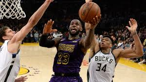

Rules of Basketball
Each team can have a maximum of 5 players on the court at any one time.
The ball can only be moved by either dribbling (bouncing the ball) or
passing the ball
After the ball goes into a team's half and they win possession back the
ball must then make it back over the half way line within 10 seconds.
Each team has 24 seconds to at least shot at the basket. A shot
constitutes either going in the basket or hitting the rim of the basket.
If after the shot is taken and the ball fails to go in the basket then the
shot clock is restarted for another 24 seconds.
The team trying to score a basket is called the offence whilst the team
trying to prevent them from scoring is called the defence. The defence
must do all they can to stop the offence from scoring by either blocking a
shot or preventing a shot from being fired.
After each successful basket the ball is then turned over to the
opposition.
Fouls committed throughout the game will be accumulated and then when
reached a certain number will be eventually be awarded as a free throw. A
free throw involves one playerfrom the offensive team (the player fouled)
to take a shot unopposed from the free throw line. Depending on where the
foul was committed will depend on the number free throws a player gets.

famous Basketball players:
- LeBron James
- Kobe Bryant
- Michael Jordan
- Dennis Rodman
- Magic Johnson